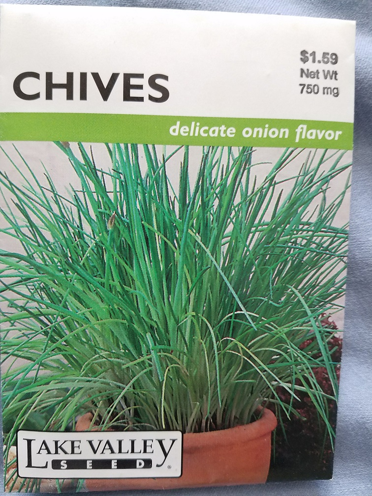
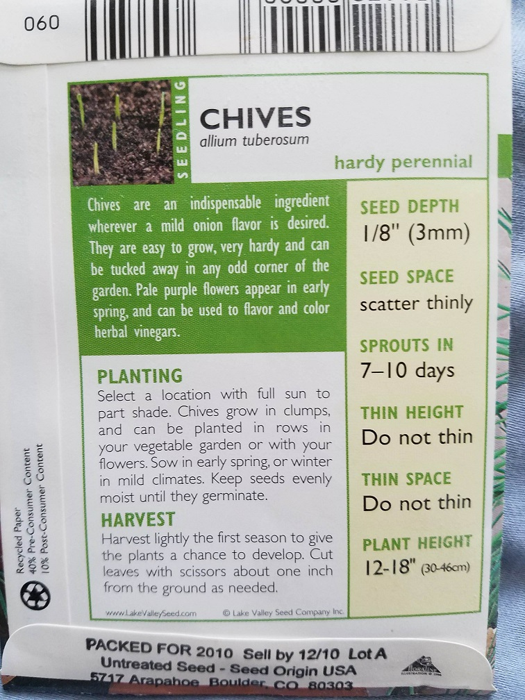
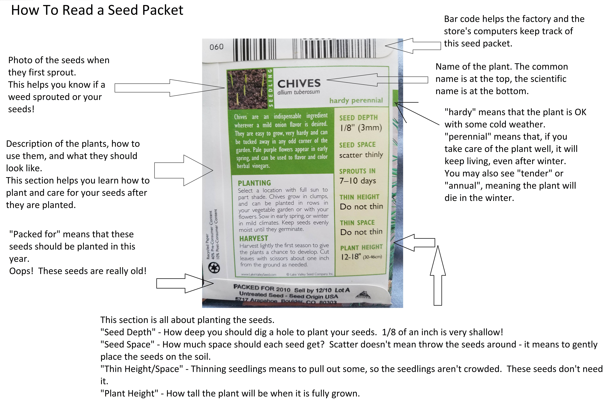
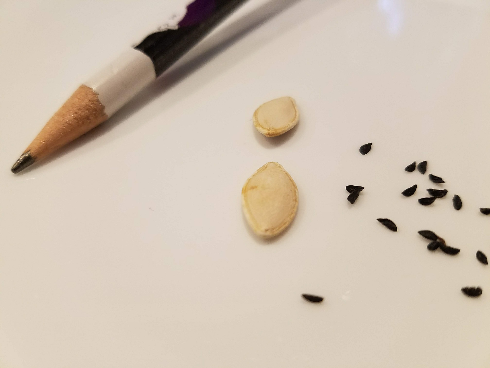
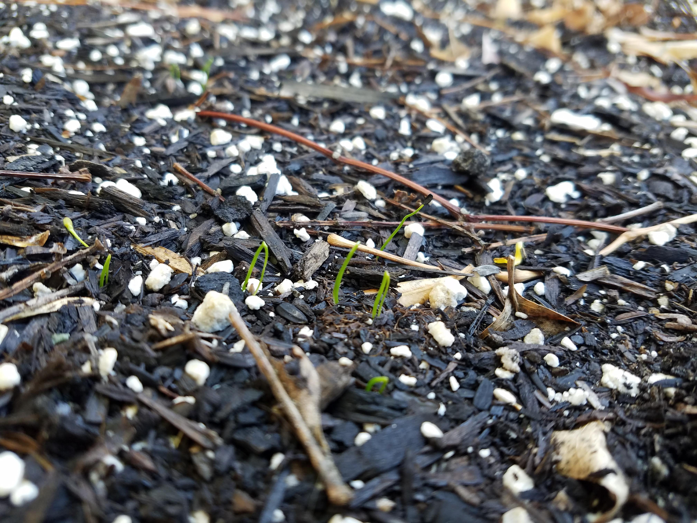
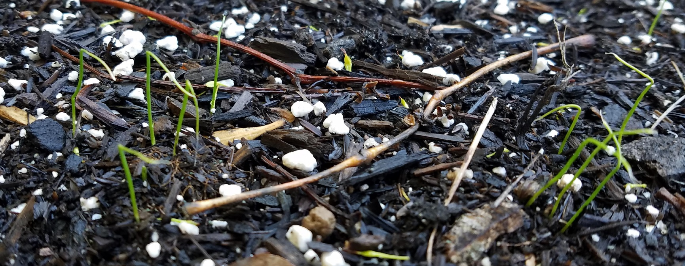

Today we had scheduled a TLD Afternoon in the Garden, but, of course, the school is closed, and we are all keeping our distance from others, so we are not gathering in the garden. So, I thought I'd send out a little mini garden lesson, all about planting chives from seed.
First, I found a chive seed packet:

Whenever you get a seed packet, don't forget to read the back:

But, sometimes the back of a seed packet seems really complicated. So, here's what all of that means (you might have to zoom in):

Once I read the packet, I opened it up and checked out the seeds! Chive seeds are small and black. This photo shows them next to pumpkin seeds and a pencil, so you can tell how tiny they are. They are very easy to lose, so I put them on a plate.

Next, I found a nice place to plant the seeds, with clean dirt. I picked up any rocks or leaves around the soil. Since chive seeds are so small, it is very hard to dig individual holes for the seeds. Instead, I put the seeds on top of the soil, and then gently sprinkled a little soil over the top of them. Then I watered gently. Seeds should always be watered gently, so they don't wash away!
I planted my seeds March 14th. This photo was taken April 1st, the first day the seeds sprouted:

My seeds took 15 days to sprout - but the packet said 7-10 days. Can you guess why mine took longer? (Hint, think about the weather in March - was it hot, cold, or warm?)
Then, this is what the sprouts look like today, one week later:

Just a little bit bigger. I will keep watering them, and I hope that the chives I planted look as good as the ones on the front of the seed packet by summer!
Keep observing the world around you. Spring has sprung, and plants are growing all around you - see if you can see differences each day.
Happy gardening everyone!
- The PTA Garden Team
(P.S. here is a link to the original webpage)